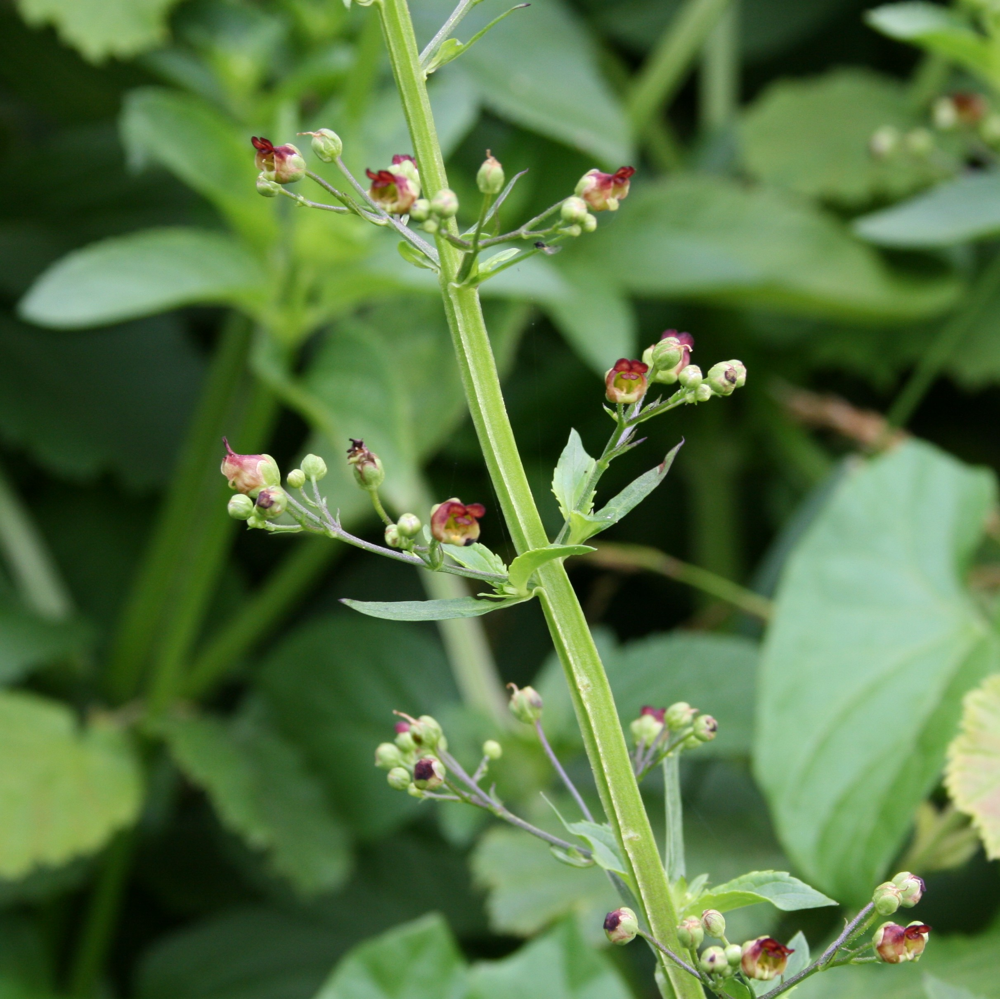
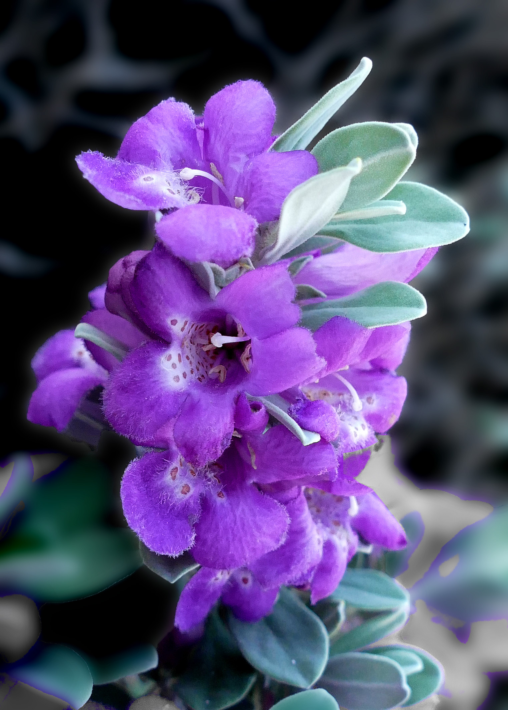
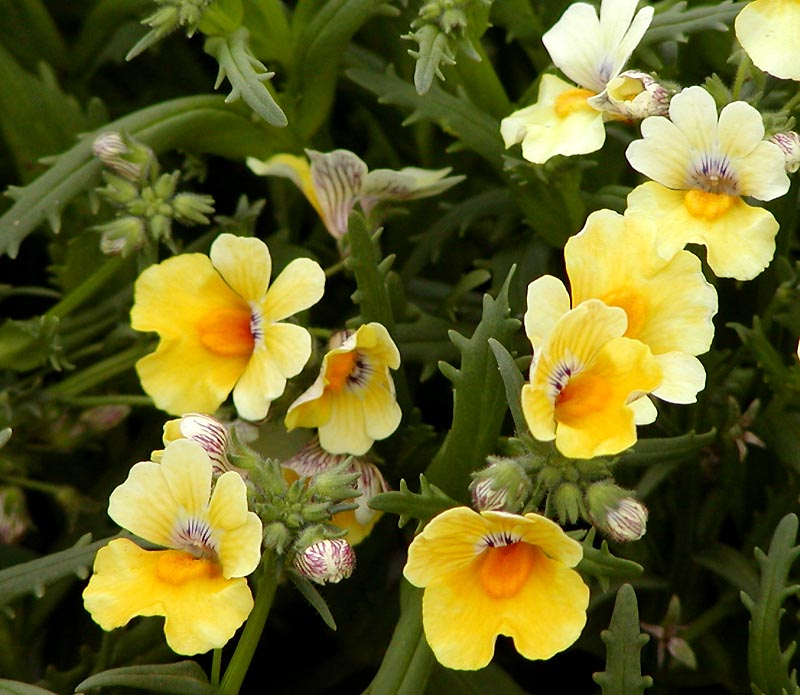
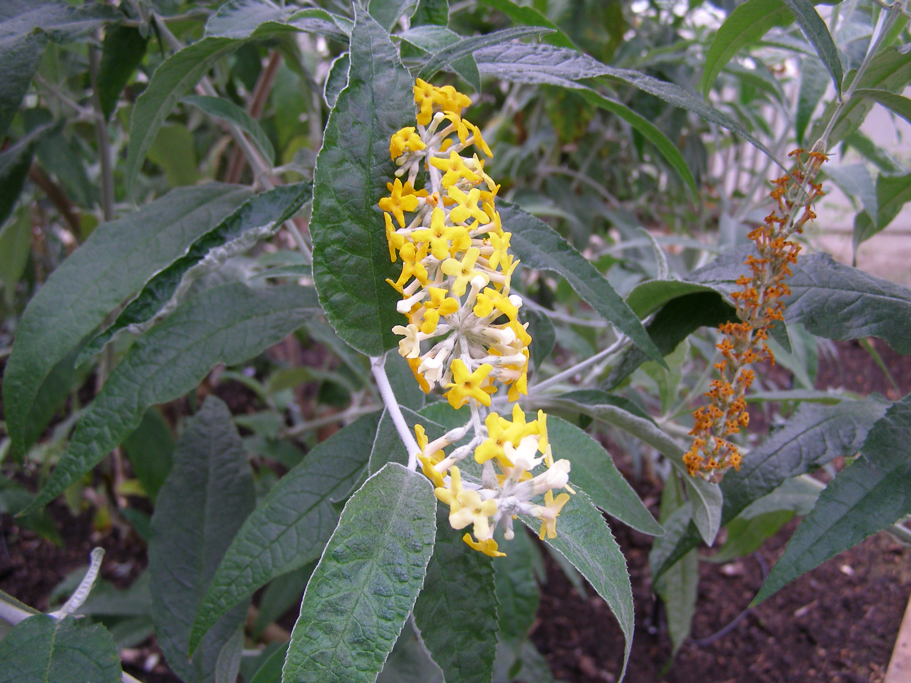
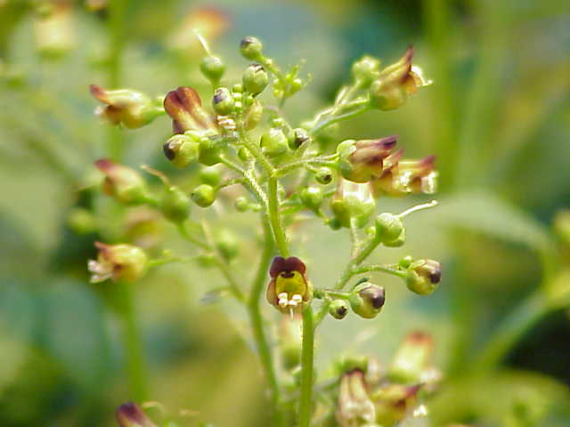

Scrophulariaceae
figwort family
|  Scrophularia oblongifolia (green figwort) from Wikimedia Commons by E Wusk - Own work, CC BY-SA 4.0 |
 Leucophyllum frutescens (Texas sage) from Wikimedia Commons by Jim Evans - Own work, CC BY-SA 4.0 |
|  Nemesia sp. from Wikimedia Commons by Stan Shebs, CC BY-SA 3.0 |
 Buddleja madagascariensis (Madagascan butterfly bush) from Wikimedia Commons by Addihockey10 - Own work, CC BY-SA 3.0 |
{kind=link}
{kind=link}
{kind=link}
{kind=link}
botanical characteristics
Botany in a Day, p. 150 | "Scrophulariaceae", Wikipedia
- growth form
- annual and perennial herbs, as well as shrubs
- flowers
- irregular, bisexual flowers (occasionally regular)
- 5 united sepals and 5 united petals (sometimes 4 of each), usually 2-lipped with 2 lobes up and 3 lobes down
- reproductive structures
- 4 or 5 stamens, often in two pairs (with a shortened fifth stamen if present)
- ovary positioned superior consisting of 2 united carpels
- matures as a capsule with many seeds
distribution
"Scrophulariaceae", Wikipedia
- 62 genera and about 1830 known species
- cosmopolitan distribution
- majority of members found in temperate areas, including tropical mountains
"Factsheet - Scrophulariaceae", Key Search
- higher diversity in temperate areas and tropical mountain regions
- wide range of habitats, but common in open grassland and high mountainous areas, rarely in disturbed areas in wet tropical forest
ecological roles
"Factsheet - Scrophulariaceae", Key Search
- several genera have hairs that secrete oil to attract pollinators
- the genus Diascia has co-evolved with bees of the genus Rediviva
- the female bees collect oil from flowers to feed their larvae or sometimes to waterproof their nests
- the length of the spurs of different Diascia species correlates with the length of the forelegs of the different bees leading to species-specific pollination
common pharmacological constituents
"Angiosperm families - Scrophulariaceae Juss.", DELTA
- cyanogenic (rarely), or not cyanogenic; cynogenic constituents phenylalanine-derived; alkaloids present, or absent (mostly); anthraquinones detected (3 genera); derived from shikimic acid; verbascosides detected (14 genera); cornoside detected (4 genera); iridoids detected (commonly, including in Selagineae); ‘Route I’ type (doubtfully, normal), or ‘Route II’ type (normal and decarb.); saponins/sapogenins present, or absent; proanthocyanidins absent; flavonols to all intents and purposes, absent; ellagic acid absent (13 species, 9 genera); aluminium accumulation not found; sieve-tube plastids S-type
patterns in medicinal actions
- saponins dislodge āma: mucus, congested lymph, heat
traditional/cultural uses
"Factsheet - Scrophulariaceae", Key Search
- many species are important in horticulture as ornamental plants, such as Antirrhinum, Calceolaria, Linaria, Mimulus, Pentstemon, Torenia,-and Verbascum
- of these, only Verbascum remains in Scrophulariaceae
- ome medicinal plants included in the family are Digitalis, Leptandra, Scrophularia, and Verbascum
- Digitalis and Leptandra no longer in Scrophulariaceae
warnings
- no family-wide warnings
extra information
Botany in a Day, p. 150
- this family was gutted in the taxonomic name game
- several genera were reclassified under the closely related Plantaginaceae (plantain), Phrymaceae (lopseed), and Orobanchaceae (broomrape) families
- remaining genera in Scrophulariaceae lack strong patterns between them
- the Lentibulariaceae (bladderwort) and Acanthaceae (acanthus) families also have figwort-like flowers
- being able to recognize a figwort-like flower is an important first step in identifying any of these 6 related families
prominent genera
- Buddleja (butterfly bushes)
- Leucophyllum (incl. Texas sage)
- Limosella (mudworts)
- Scrophularia (figworts)
- Verbascum (mulleins)
plant highlights
see list of materia medica entries here
Scrophularia nodosa
|  from Wikimedia Commons by Kurt Stüber, CC BY-SA 3.0 |
common names: figwort en español: escrofularia, hierba de lamparones, hierba de San Pedro |
{kind=link}
description
"Scrophularia nodosa", Wikipedia
- upright, with thick, sharply square, succulent stems
- leaves are opposite, ovate at the base and lanceolate at the tip, all having toothed margins
- flowers are in loose cymes in oblong or pyramidal panicles
- individual flowers are globular, with five green sepals encircling green or purple petals, giving way to an egg-shaped seed capsule
distribution
"Scrophularia nodosa", Wikipedia
- found in temperate regions of the Northern hemisphere except western North America
medicinal/magical uses
The New Age Herbalist, p. 113
- alterative, useful for eruptive skin diseases
- stimulates the lymphatic system
- once used to treat scrofula (TB of the cervical lymph nodes)
preparation methods
- infusion
- tincture
warnings
The New Age Herbalist, p. 113
- poisonous in large doses
sources
"Angiosperm families - Scrophulariaceae L." on DELTA - DEscription Language for TAxonomy. Retrieved 3 September 2025.
Elpel, Thomas J. Botany in a Day: The Patterns Method of Plant Identification (2021)
"Factsheet - Scrophulariaceae" on Key Search. Retrieved 3 September 2025.
Goldberg Blackthorn, Samantha. Ace of Cups Herbal Medicine and Botanical Magic Herbal School (2024)
Mabey, Richard et al. The New Age Herbalist (1988)
"Scrophularia nodosa" on Wikipedia. Retrieved 3 September 2025.
"Scrophulariaceae" on Wikipedia. Retrieved 3 September 2025.